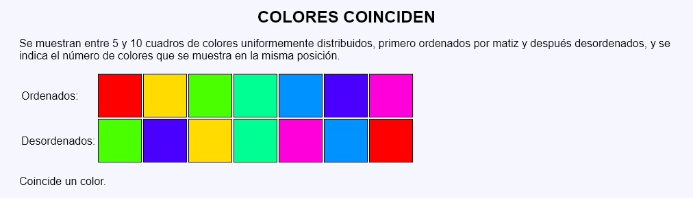
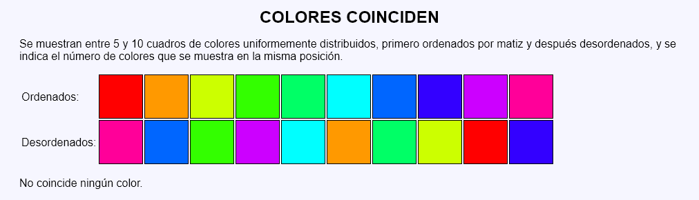
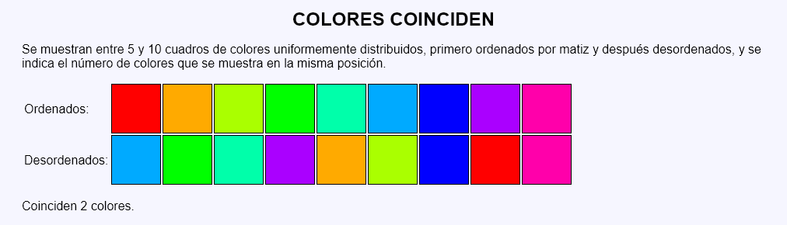

Colores coinciden - Ejemplo de programa
Nota: El día del examen los alumnos no tienen acceso a este ejemplo, solamente tienen acceso a las capturas del apartado anterior.
Un ejemplo de programa puede probarse en la ventana siguiente:
En este ejercicio se debe crear un programa que muestre un número al azar de cuadros de colores (entre 5 y 10) en dos filas. En la primera fila el matiz de los colores estará uniformemente distribuido y en la segunda fila los colores serán los mismos, pero ordenados al azar. Finalmente el programa indicará el número de cuadros en el que los colores de la primera y segunda fila coinciden en la misma posición.



<table>
<tr>
<td style="border: none">Ordenados:</td>
<td style="background-color: hwb(0 0% 0%)"></td>
<td style="background-color: hwb(72 0% 0%)"></td>
<td style="background-color: hwb(144 0% 0%)"></td>
<td style="background-color: hwb(216 0% 0%)"></td>
<td style="background-color: hwb(288 0% 0%)"></td>
</tr>
<tr>
<td style="border: none">Desordenados:</td>
<td style="background-color: hwb(216 0% 0%)"></td>
<td style="background-color: hwb(0 0% 0%)"></td>
<td style="background-color: hwb(288 0% 0%)"></td>
<td style="background-color: hwb(144 0% 0%)"></td>
<td style="background-color: hwb(72 0% 0%)"></td>
</tr>
</table>
<p>No coincide ningún color.</p>
Nota: El día del examen los alumnos no tienen acceso a este ejemplo, solamente tienen acceso a las capturas del apartado anterior.
Un ejemplo de programa puede probarse en la ventana siguiente: